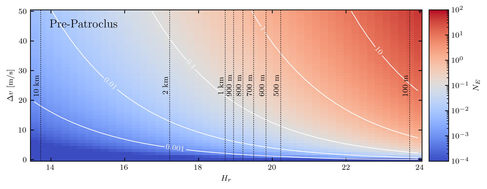
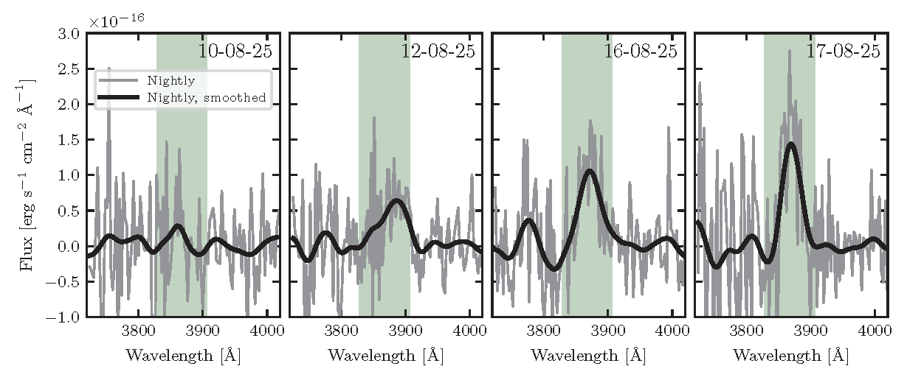
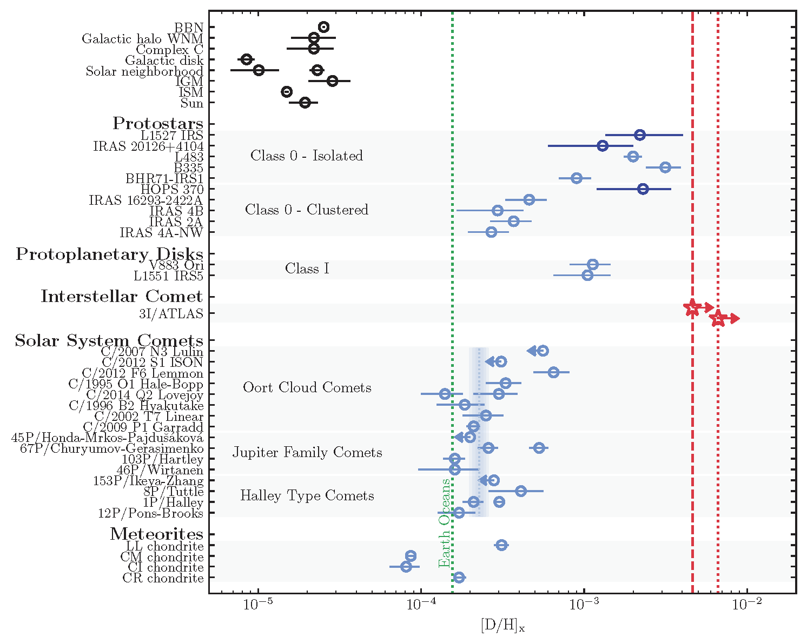
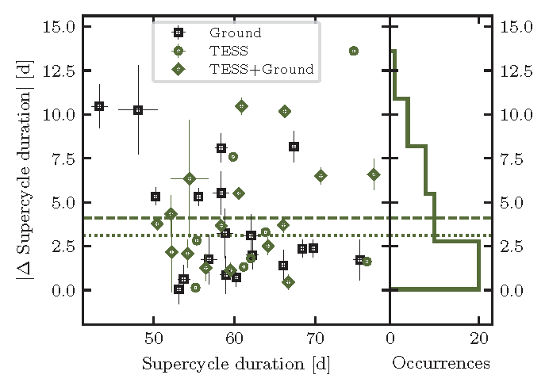
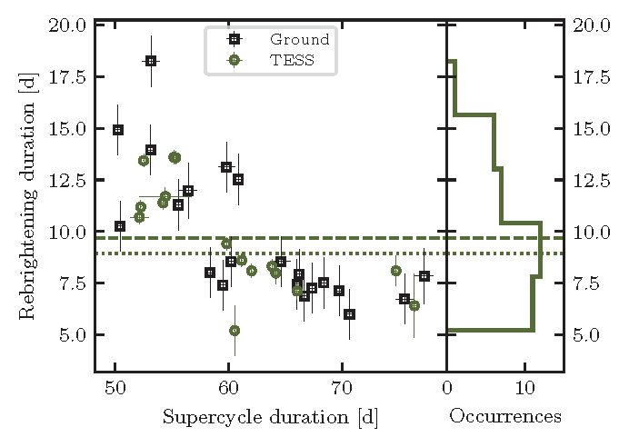

I use observations of small bodies in the Solar System to study how planetary systems form and evolve. My work focuses on rocky and icy planetesimals, both from the Solar System and beyond, as probes of the physical and chemical processes that shape planetary systems over time.
Jupiter Trojans provide an accessible record of the early Solar System. Because they are thought to have originated in the primordial outer Solar System and later been captured during giant-planet migration, their physical properties offer insight into radial mixing, collisional evolution, and the early evolution of the Solar System.
I use wide-field imagers such as the Dark Energy Camera together with shift-and-stack techniques to discover and characterize the smallest and faintest Jupiter Trojans (D < 2 km). A major goal of this work is to measure their size distribution and connect it to their origin and collisional history.
I am also interested in the Jupiter Trojans as targets for spacecraft exploration. In Salazar Manzano et al. 2025 (PSJ), I explored whether NASA’s Lucy mission could encounter an additional, yet unknown Trojan in the L5 cloud. We showed that an extra sub-kilometer target is likely to exist within Lucy’s accessible volume and described how the nodal clustering of this resonant population can be used to identify potential flyby targets.

Interstellar objects offer a rare opportunity to study planetesimals from other planetary systems directly. Because small bodies in distant systems are normally too faint to be detected within their host systems, interstellar visitors passing through the Solar System provide a unique way to compare the chemistry and evolution of other systems with our own.
After the discovery of 3I/ATLAS in July 2025, I characterized this interstellar comet using spectroscopic and photometric observations from the MDM 2.4 m and 1.3 m telescopes. In Salazar Manzano et al. 2025 (ApJL), we reported one of the earliest direct detections of gas activity in its coma and showed that its CN behavior resembled that of carbon-chain-depleted comets in the Solar System.

I am especially interested in using isotopic measurements to probe the formation environments of planetary systems. In Salazar Manzano et al. 2026 (Nature Astronomy), using ALMA observations, we detected deuterated water in 3I/ATLAS shortly after perihelion and obtained the first constraint on the water D/H ratio in an interstellar comet. The large deuterium enrichment we found implies formation in an ultra-cold prestellar environment, under conditions significantly different from those that formed the Solar System.

I am also interested in variable and transient astrophysical phenomena, especially systems that can be used as laboratories for accretion physics. One area of focus is AM CVn binaries, ultra-compact accreting systems composed of two white dwarfs.
KL Dra is a particularly valuable system because of its frequent outburst cycle. In Salazar Manzano et al. 2025 (PASA, in revision), we assembled a long-term light curve by combining TESS observations with data from ground-based surveys including ZTF, ASAS-SN, and ATLAS on a homogeneous scale. This dataset allowed us to connect different outburst properties to the long-term evolution of the supercycle and provides new constraints for accretion-disk instability models.

